Sparse Networks with Overlapping Communities (SNetOC) package: demo_usairport
This Matlab script performs posterior inference on a network of airports to find latent overlapping communities, using a Bayesian nonparametric approach.
For downloading the package and information on installation, visit the SNetOC webpage.
Reference:
- A. Todeschini, X. Miscouridou and F. Caron (2017) Exchangeable Random Measures for Sparse and Modular Graphs with Overlapping Communities. arXiv:1602.02114.
Authors:
- A. Todeschini, Inria
- X. Miscouridou, University of Oxford
- F. Caron, University of Oxford
Tested on Matlab R2017a. Requires the Statistics toolbox.
Last Modified: 01/2020
Contents
General settings
clear close all tstart = clock; % Starting time istest = true; % enable testing mode: quick run with smaller nb of iterations
In test mode, a smaller number of iterations is run. Although the sampler clearly has not converged yet, the method already recovers well interpretable latent communities. To reproduce the results of the paper, set this value to false.
root = '.'; if istest outpath = fullfile(root, 'results', 'demo_usairport', 'test'); else outpath = fullfile(root, 'results', 'demo_usairport', date); end if ~isdir(outpath) mkdir(outpath); end % Add path addpath ./GGP/ ./CGGP/ ./utils/ % Default fontsize set(0, 'DefaultAxesFontSize', 14) % Set the seed rng default
Load Network of airports with a connection to a US airport
load ./data/usairport/usairport titlenetwork = 'US airport network in 2010'; name = 'usairport'; labels = {'Airports','Airports'}; G = G | G'; % make undirected graph G = logical(G-diag(diag(G))); % remove self edges (#164) meta.degree = num2cell(full(sum(G,2))); fn = fieldnames(meta); % Plot adjacency matrix figure; spy(G); xlabel(labels{2}) ylabel(labels{1})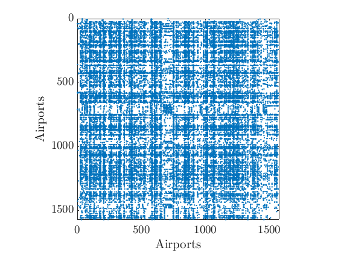
Posterior Inference using Markov chain Monte Carlo and point estimation
Users needs to start the parallel pool by using the command parpool to run multiple chains in parallel.
% Define the parameters of the prior p = 4; % Number of commmunities objprior = graphmodel('CGGP', p); % CGGP graph model with p communities % Define parameters of the MCMC sampler nchains = 3; if istest niterinit = 1000; niter = 20000; nsamples = 100; ndraws = 100; else niterinit = 10000; niter = 1e7; nsamples = 1000; ndraws = 500; end nburn = floor(niter/2); thin = ceil((niter-nburn)/nsamples); verbose = true; % Create the graphMCMC object objmcmc = graphmcmc(objprior, niter, 0, thin, nchains); % Run initialisation init = graphinit(objmcmc, G, niterinit);
----------------------------------- Start initialisation of the MCMC algorithm for CGGP ----------------------------------- End initialisation -----------------------------------
% Run MCMC sampler
objmcmc = graphmcmcsamples(objmcmc, G, verbose, init);
----------------------------------- Start MCMC for undirected CGGP graphs Nb of nodes: 1574x1574 - Nb of edges: 17215 (0 missing) Nb of chains: 3 - Nb of iterations: 20000 Estimated computation time: 0 hour(s) 11 minute(s) Estimated end of computation: 01-Feb-2020 18:13:45 ----------------------------------- Markov chain 1/3 ----------------------------------- i=2000 alp=122.34 sig=0.191 tau=0.91 a=0.36 0.33 0.17 0.37 b=0.58 0.26 0.03 0.56 w*=0.39 0.62 1.33 0.40 b2=0.52 0.24 0.03 0.51 alp2=120.16 rhmc=0.76 rhyp=0.36 eps=0.021 rwsd=0.02 i=4000 alp=106.97 sig=0.213 tau=0.90 a=0.31 0.29 0.12 0.29 b=0.43 0.19 0.01 0.36 w*=0.42 0.75 1.51 0.46 b2=0.39 0.17 0.01 0.33 alp2=104.62 rhmc=0.71 rhyp=0.36 eps=0.021 rwsd=0.02 i=6000 alp=93.87 sig=0.222 tau=0.83 a=0.25 0.24 0.11 0.26 b=0.27 0.10 0.01 0.20 w*=0.39 0.68 1.58 0.44 b2=0.22 0.09 0.01 0.16 alp2=90.18 rhmc=0.71 rhyp=0.38 eps=0.021 rwsd=0.02 i=8000 alp=75.46 sig=0.265 tau=1.08 a=0.25 0.22 0.10 0.22 b=0.22 0.06 0.01 0.16 w*=0.42 0.78 1.67 0.46 b2=0.24 0.07 0.01 0.17 alp2=76.92 rhmc=0.72 rhyp=0.37 eps=0.021 rwsd=0.02 i=10000 alp=69.63 sig=0.267 tau=0.98 a=0.22 0.20 0.09 0.22 b=0.12 0.05 0.00 0.11 w*=0.47 0.86 1.55 0.44 b2=0.12 0.05 0.00 0.11 alp2=69.27 rhmc=0.72 rhyp=0.39 eps=0.021 rwsd=0.02 i=12000 alp=68.16 sig=0.261 tau=1.14 a=0.19 0.20 0.09 0.22 b=0.09 0.04 0.00 0.11 w*=0.40 0.80 1.50 0.47 b2=0.10 0.05 0.00 0.12 alp2=70.45 rhmc=0.71 rhyp=0.40 eps=0.021 rwsd=0.02 i=14000 alp=69.02 sig=0.252 tau=1.23 a=0.20 0.17 0.09 0.21 b=0.08 0.03 0.00 0.10 w*=0.41 0.89 1.51 0.46 b2=0.10 0.03 0.00 0.12 alp2=72.75 rhmc=0.72 rhyp=0.39 eps=0.021 rwsd=0.02 i=16000 alp=70.27 sig=0.246 tau=1.57 a=0.18 0.18 0.08 0.18 b=0.08 0.03 0.00 0.08 w*=0.42 0.75 1.50 0.43 b2=0.12 0.05 0.00 0.12 alp2=78.47 rhmc=0.71 rhyp=0.38 eps=0.021 rwsd=0.02 i=18000 alp=76.26 sig=0.239 tau=1.59 a=0.19 0.18 0.08 0.19 b=0.08 0.03 0.00 0.09 w*=0.41 0.82 1.55 0.49 b2=0.12 0.05 0.00 0.14 alp2=85.28 rhmc=0.71 rhyp=0.40 eps=0.021 rwsd=0.02 i=20000 alp=76.14 sig=0.242 tau=1.99 a=0.18 0.16 0.08 0.19 b=0.07 0.03 0.00 0.08 w*=0.49 0.81 1.64 0.48 b2=0.15 0.06 0.00 0.17 alp2=89.93 rhmc=0.71 rhyp=0.40 eps=0.021 rwsd=0.02 ----------------------------------- Markov chain 2/3 ----------------------------------- i=2000 alp=106.37 sig=0.210 tau=1.14 a=0.39 0.34 0.16 0.35 b=0.49 0.20 0.02 0.41 w*=0.46 0.62 1.63 0.39 b2=0.56 0.23 0.02 0.47 alp2=109.37 rhmc=0.75 rhyp=0.37 eps=0.021 rwsd=0.02 i=4000 alp=103.71 sig=0.204 tau=1.43 a=0.30 0.27 0.13 0.29 b=0.22 0.11 0.01 0.27 w*=0.47 0.68 1.35 0.40 b2=0.32 0.16 0.01 0.38 alp2=111.55 rhmc=0.72 rhyp=0.36 eps=0.021 rwsd=0.02 i=6000 alp=84.04 sig=0.228 tau=1.46 a=0.29 0.23 0.11 0.26 b=0.23 0.08 0.01 0.19 w*=0.41 0.79 1.60 0.44 b2=0.33 0.12 0.01 0.28 alp2=91.62 rhmc=0.71 rhyp=0.37 eps=0.021 rwsd=0.02 i=8000 alp=81.83 sig=0.219 tau=1.51 a=0.25 0.21 0.11 0.25 b=0.13 0.04 0.00 0.14 w*=0.41 0.71 1.50 0.41 b2=0.19 0.06 0.01 0.21 alp2=89.56 rhmc=0.72 rhyp=0.38 eps=0.021 rwsd=0.02 i=10000 alp=73.59 sig=0.233 tau=1.47 a=0.20 0.20 0.09 0.23 b=0.08 0.04 0.00 0.10 w*=0.31 0.75 1.40 0.35 b2=0.12 0.05 0.00 0.15 alp2=80.54 rhmc=0.71 rhyp=0.39 eps=0.021 rwsd=0.02 i=12000 alp=73.33 sig=0.242 tau=1.57 a=0.19 0.19 0.09 0.22 b=0.08 0.04 0.00 0.10 w*=0.41 0.92 1.39 0.46 b2=0.13 0.06 0.00 0.15 alp2=81.76 rhmc=0.73 rhyp=0.38 eps=0.021 rwsd=0.02 i=14000 alp=76.63 sig=0.228 tau=1.65 a=0.19 0.20 0.09 0.21 b=0.07 0.04 0.00 0.09 w*=0.43 0.82 1.30 0.39 b2=0.12 0.06 0.00 0.15 alp2=85.85 rhmc=0.70 rhyp=0.39 eps=0.021 rwsd=0.02 i=16000 alp=66.02 sig=0.256 tau=2.04 a=0.20 0.17 0.08 0.21 b=0.06 0.02 0.00 0.07 w*=0.44 0.93 1.45 0.46 b2=0.12 0.05 0.00 0.14 alp2=79.25 rhmc=0.69 rhyp=0.40 eps=0.021 rwsd=0.02 i=18000 alp=70.80 sig=0.240 tau=2.07 a=0.20 0.18 0.08 0.19 b=0.07 0.02 0.00 0.07 w*=0.43 0.81 1.52 0.44 b2=0.15 0.05 0.00 0.14 alp2=84.27 rhmc=0.71 rhyp=0.38 eps=0.021 rwsd=0.02 i=20000 alp=73.01 sig=0.239 tau=2.85 a=0.18 0.16 0.08 0.19 b=0.05 0.02 0.00 0.07 w*=0.42 0.87 1.64 0.43 b2=0.15 0.06 0.01 0.19 alp2=93.84 rhmc=0.71 rhyp=0.41 eps=0.021 rwsd=0.02 ----------------------------------- Markov chain 3/3 ----------------------------------- i=2000 alp=116.71 sig=0.205 tau=0.91 a=0.19 0.32 0.32 0.37 b=0.04 0.47 0.28 0.60 w*=1.30 0.43 0.63 0.40 b2=0.04 0.42 0.25 0.55 alp2=114.41 rhmc=0.76 rhyp=0.35 eps=0.021 rwsd=0.02 i=4000 alp=97.05 sig=0.239 tau=1.01 a=0.13 0.29 0.27 0.28 b=0.01 0.36 0.15 0.34 w*=1.68 0.36 0.71 0.39 b2=0.01 0.36 0.15 0.35 alp2=97.30 rhmc=0.72 rhyp=0.37 eps=0.021 rwsd=0.02 i=6000 alp=93.75 sig=0.212 tau=1.01 a=0.11 0.26 0.25 0.27 b=0.01 0.24 0.11 0.22 w*=1.31 0.31 0.61 0.37 b2=0.01 0.24 0.11 0.22 alp2=93.90 rhmc=0.72 rhyp=0.38 eps=0.021 rwsd=0.02 i=8000 alp=75.65 sig=0.252 tau=1.24 a=0.09 0.22 0.22 0.25 b=0.01 0.16 0.08 0.15 w*=1.68 0.42 0.64 0.48 b2=0.01 0.19 0.09 0.19 alp2=79.85 rhmc=0.71 rhyp=0.38 eps=0.021 rwsd=0.02 i=10000 alp=77.82 sig=0.247 tau=1.11 a=0.09 0.22 0.21 0.22 b=0.00 0.17 0.06 0.12 w*=1.64 0.41 0.86 0.50 b2=0.00 0.19 0.07 0.13 alp2=79.84 rhmc=0.70 rhyp=0.38 eps=0.021 rwsd=0.02 i=12000 alp=66.61 sig=0.260 tau=1.17 a=0.09 0.21 0.21 0.22 b=0.00 0.11 0.05 0.10 w*=1.62 0.42 0.87 0.49 b2=0.00 0.13 0.06 0.12 alp2=69.35 rhmc=0.71 rhyp=0.38 eps=0.021 rwsd=0.02 i=14000 alp=71.97 sig=0.242 tau=1.40 a=0.08 0.19 0.19 0.21 b=0.00 0.08 0.03 0.08 w*=1.41 0.41 0.93 0.42 b2=0.00 0.12 0.04 0.12 alp2=78.02 rhmc=0.71 rhyp=0.39 eps=0.021 rwsd=0.02 i=16000 alp=62.97 sig=0.259 tau=1.52 a=0.08 0.20 0.19 0.21 b=0.00 0.07 0.03 0.08 w*=1.70 0.39 0.74 0.43 b2=0.00 0.11 0.05 0.12 alp2=70.21 rhmc=0.72 rhyp=0.40 eps=0.021 rwsd=0.02 i=18000 alp=70.94 sig=0.237 tau=1.82 a=0.08 0.18 0.19 0.21 b=0.00 0.06 0.03 0.07 w*=1.32 0.39 0.84 0.42 b2=0.00 0.12 0.05 0.12 alp2=81.78 rhmc=0.72 rhyp=0.39 eps=0.021 rwsd=0.02 i=20000 alp=71.47 sig=0.240 tau=2.27 a=0.07 0.17 0.19 0.21 b=0.00 0.06 0.03 0.07 w*=1.43 0.39 0.83 0.42 b2=0.00 0.14 0.06 0.15 alp2=87.00 rhmc=0.73 rhyp=0.39 eps=0.021 rwsd=0.02 ----------------------------------- End MCMC Computation time: 0 hour(s) 14 minute(s) -----------------------------------
% Print summary in text file print_summary(['summary_' num2str(p) 'f.txt'], titlenetwork, G, niter, nburn, nchains, thin, p, outpath, tstart) % Save workspace save(fullfile(outpath, ['workspace_' num2str(p) 'f.mat']))
% Log posterior approximation
[lp_nonlat, lp_lat, ll_nonlat, ll_lat] = logpost_approx(objmcmc, G);
discard burnin
objmcmc_noburn = objmcmc; objmcmc_noburn.samples = discard(objmcmc.samples, floor(nburn/objmcmc.settings.thin)); objmcmc_noburn.settings.nburn = nburn;
% Point estimation of the model parameters
[estimates, C_st] = graphest(objmcmc_noburn);
----------------------------------- Start parameters estimation for CGGP graphs: 300 samples Estimated end of computation: 01-Feb-2020 18:17:59 (0.0 hours) |---------------------------------| |*********************************| End parameters estimation for CGGP graphs Computation time: 0.0 hours -----------------------------------
Plots
prefix = sprintf('%s_%df_', name, p); suffix = '';
% Plot Log posterior approximation iter = (1:size(lp_nonlat,1))*thin; plot_logpost(lp_nonlat, iter, [], 'Log-posterior', outpath, prefix, '_nonlat'); plot_logpost(lp_lat, iter, [], 'Log-posterior', outpath, prefix, '_lat'); % Plot log-posterior autocorr lp_nonlat_noburn = lp_nonlat(floor(nburn/niter*size(lp_nonlat, 1)):end, :); lp_lat_noburn = lp_lat(floor(nburn/niter*size(lp_lat, 1)):end, :); plot_autocorr_logpost(lp_nonlat_noburn, thin, 'Log-posterior', outpath, prefix, '_nonlat'); plot_autocorr_logpost(lp_lat_noburn, thin, 'Log-posterior', outpath, prefix, '_lat'); % Plot cost if ~isempty(C_st) plot_cost(C_st, outpath, prefix, suffix); end % Assign max feature for community detection [~, nodefeat] = max(estimates.w, [],2); % Identify each feature/community as Hub/East/West/Alaska % (This step would normally require a human interpretation of the features) code_airports = {'JFK', 'LAN', 'DEN', 'BET'}; for k=1:length(code_airports) [~, ind_features(k)] = max(estimates.w(strcmp(meta.code, code_airports{k}), :)); end if length(unique(ind_features))~=4 warning('Problem with the interpretation of features/communities'); ind_features = 1:4; featnames = {'Feature 1', 'Feature 2', 'Feature 3', 'Feature 4'}; else featnames = {'Hub', 'East', 'West', 'Alaska'}; end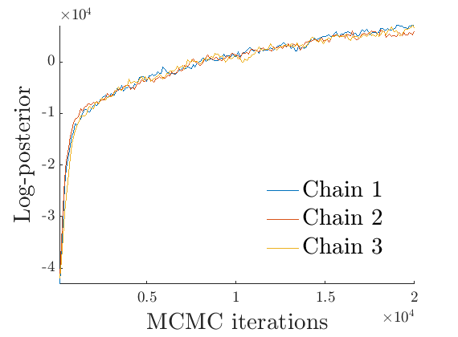 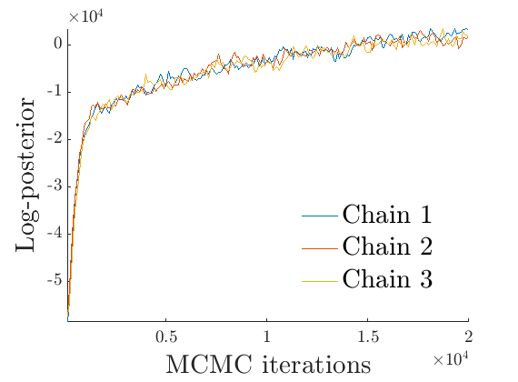 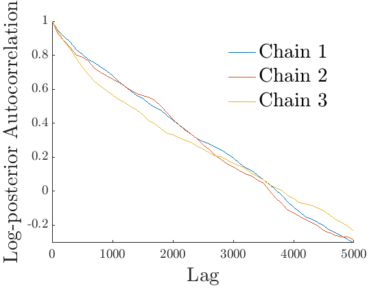 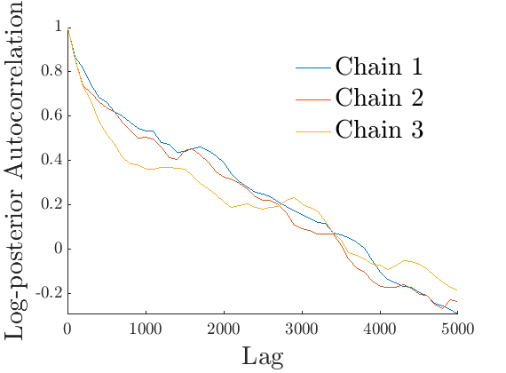 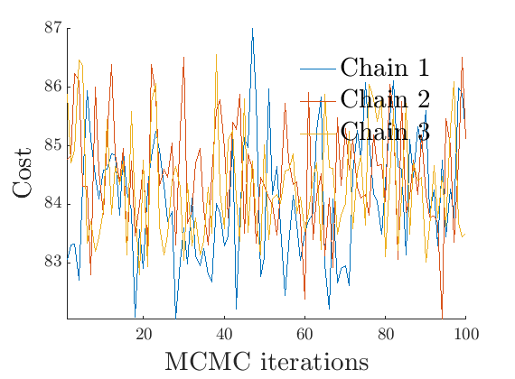
% Plot traces and histograms variables = {'logalpha2', 'sigma', 'Fparam.a', 'Fparam.b2', 'mean_w_rem'}; namesvar = {'$\log \tilde\alpha$', '$\sigma$', '$a$', '$\tilde b$', '$\overline{w}_{\ast}$'}; plot_trace(objmcmc.samples, objmcmc.settings, variables, namesvar, [], outpath, prefix, suffix); plot_hist(objmcmc_noburn.samples, variables, namesvar, [], ind_features, [], outpath, prefix, suffix);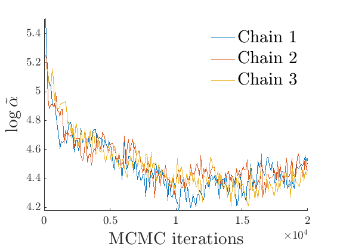 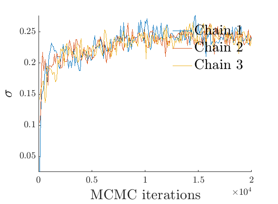 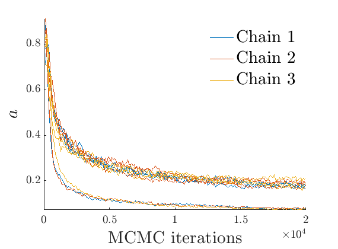 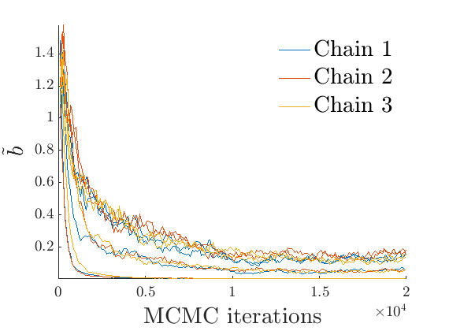 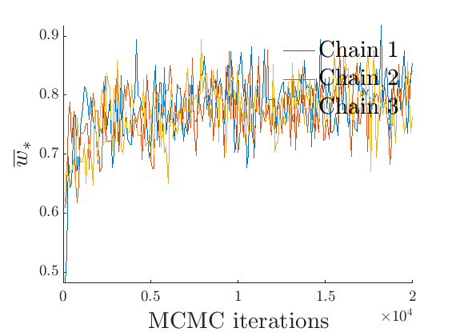 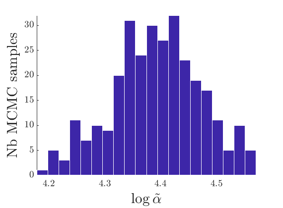 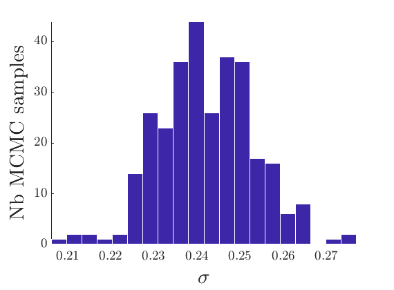 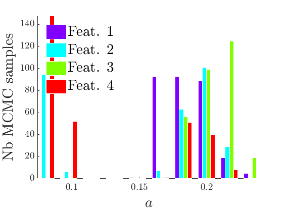 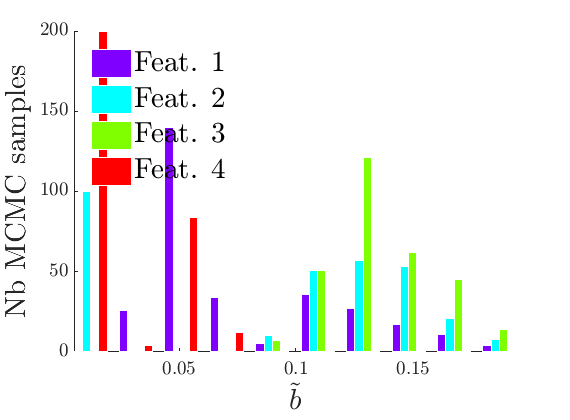 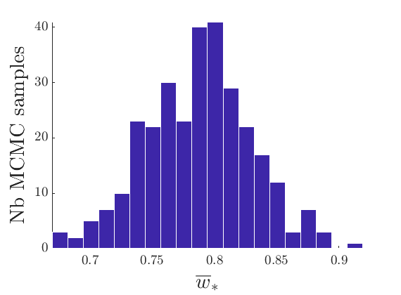
% Plot the graph by sorting the nodes by max feature plot_sortedgraph(G, nodefeat, nodefeat, ind_features, labels, outpath, prefix, suffix, {'png'}); if isfield(meta, 'groups') % Plots by groups right vs left plot_groups(estimates.w, meta.groups, meta.(groupfield), ind_features, label_groups, featnames, color_groups, outpath, prefix, suffix); end


% Show the proportion in each features for a few nodes % https://www.mapcustomizer.com/ names = { 'New York, NY' % 'Washington, DC' 'Miami, FL' % 'Detroit, MI' % 'Knoxville, TN' % 'Atlanta, GA' % 'Louisville, KY' % 'Indianapolis, IN' 'Raleigh/Durham, NC' 'Nashville, TN' % 'Chicago, IL' % 'Fayetteville, NC' 'Lansing, MI' 'Louisville, KY' % 'Memphis, TN' % 'Cleveland, OH' 'Minneapolis, MN' % 'Charleston/Dunbar, WV' % 'Baltimore, ML' % 'Tallahassee, FL' % 'Portland, ME' % 'Flint, MI' % 'Champaign/Urbana, IL' % 'Oklahoma City, OK' % 'Des Moines, IA' % 'Houston, TX' % 'Dallas, TX' 'Denver, CO' % 'Fort Wayne, IN' % 'Tyler, TX' % 'Salt Lake City, UT' % 'Phoenix, AZ' 'Los Angeles, CA' 'Seattle, WA' % 'San Francisco, CA' % 'Fairbanks, AK' 'Anchorage, AK' 'Bethel, AK' }; ind = zeros(size(names,1),1); for i=1:size(names,1) I = find(strcmp(meta.city, names{i})); [~, imax] = max([meta.degree{I}]); ind(i) = I(imax); end [~, ind2] = sort(meta.lon(ind), 'descend'); ind = ind(ind2); names = names(ind2); color = hsv(p); plot_nodesfeatures(estimates.w, ind, ind_features, names, featnames, color, outpath, prefix, suffix);

% Show some of the nodes in each feature fnames = {'degree', 'city'}; % meta fields displayed for features exploration formats = {'#%d,', '%s.'}; % print_features( fullfile(outpath, ['features_' num2str(p) 'f.txt']), ... estimates.w, ind_features, featnames, meta, fnames, formats) print_features( fullfile(outpath, ['featuresnorm_' num2str(p) 'f.txt']), ... bsxfun(@rdivide, estimates.w, sum(estimates.w,2)),... ind_features, featnames, meta, fnames, formats) fnames = {'city'}; % meta fields displayed for features exploration formats = {'%s.'}; % print_features( fullfile(outpath, ['features_' num2str(p) 'f_tex.txt']), ... estimates.w, ind_features, featnames, meta, fnames, formats) print_features( fullfile(outpath, ['featuresnorm_' num2str(p) 'f_tex.txt']), ... bsxfun(@rdivide, estimates.w, sum(estimates.w,2)),... ind_features, featnames, meta, fnames, formats)
& %--- Hub --- #291, New York, NY. #261, Miami, FL. #299, Washington, DC. #314, Atlanta, GA. #245, Boston, MA. #273, Newark, NJ. #292, Los Angeles, CA. #296, Chicago, IL. #244, Philadelphia, PA. #267, Houston, TX. & %--- East --- #252, Detroit, MI. #299, Washington, DC. #203, Cleveland, OH. #314, Atlanta, GA. #204, Nashville, TN. #296, Chicago, IL. #184, Indianapolis, IN. #145, Knoxville, TN. #195, Pittsburgh, PA. #195, Milwaukee, WI. & %--- West --- #274, Denver, CO. #240, Las Vegas, NV. #292, Los Angeles, CA. #190, Phoenix, AZ. #219, Burbank, CA. #193, Seattle, WA. #183, Salt Lake City, UT. #269, Minneapolis, MN. #254, Dallas/Fort Worth, TX. #154, Portland, OR. & %--- Alaska --- #172, Anchorage, AK. #131, Fairbanks, AK. #83, Bethel, AK. #55, Nome, AK. #49, Galena, AK. #43, Unalakleet, AK. #37, Iliamna, AK. #36, Kasigluk, AK. #44, Kotzebue, AK. #40, Kodiak, AK. & %--- Hub --- #10, Fort Lauderdale, FL. #2, Altoona, PA. #2, Governors Harbour, The Bahamas. #4, Lajes, Portugal. #9, Medellin, Colombia. #17, Manchester, United Kingdom. #9, Copenhagen, Denmark. #5, Presque Isle/Houlton, ME. #9, Prague, Czechoslovakia. #1, Iquique, Chile. & %--- East --- #94, Tallahassee, FL. #27, Lafayette, LA. #4, Hagerstown, MD. #83, Flint, MI. #75, Pensacola, FL. #87, Fort Wayne, IN. #43, Gainesville, FL. #13, Kinston, NC. #5, Muscle Shoals, AL. #9, Worcester, MA. & %--- West --- #3, Moab, UT. #5, Visalia, CA. #5, Camp Douglas, WI. #4, Hermosillo, Mexico. #7, Santa Fe, NM. #55, Missoula, MT. #15, Redding, CA. #30, Medford, OR. #4, Cortez, CO. #8, Santa Rosa, CA. & %--- Alaska --- #28, Juneau, AK. #12, Gambell, AK. #9, Atqasuk, AK. #31, St. Michael, AK. #18, Crooked Creek, AK. #5, Circle Hot Springs, AK. #5, 47-Mile Mine, AK. #24, Togiak, AK. #6, Whitmore, AZ. #5, Galbraith Lake, AK. & %--- Hub --- New York, NY. Miami, FL. Washington, DC. Atlanta, GA. Boston, MA. Newark, NJ. Los Angeles, CA. Chicago, IL. Philadelphia, PA. Houston, TX. & %--- East --- Detroit, MI. Washington, DC. Cleveland, OH. Atlanta, GA. Nashville, TN. Chicago, IL. Indianapolis, IN. Knoxville, TN. Pittsburgh, PA. Milwaukee, WI. & %--- West --- Denver, CO. Las Vegas, NV. Los Angeles, CA. Phoenix, AZ. Burbank, CA. Seattle, WA. Salt Lake City, UT. Minneapolis, MN. Dallas/Fort Worth, TX. Portland, OR. & %--- Alaska --- Anchorage, AK. Fairbanks, AK. Bethel, AK. Nome, AK. Galena, AK. Unalakleet, AK. Iliamna, AK. Kasigluk, AK. Kotzebue, AK. Kodiak, AK. & %--- Hub --- Fort Lauderdale, FL. Altoona, PA. Governors Harbour, The Bahamas. Lajes, Portugal. Medellin, Colombia. Manchester, United Kingdom. Copenhagen, Denmark. Presque Isle/Houlton, ME. Prague, Czechoslovakia. Iquique, Chile. & %--- East --- Tallahassee, FL. Lafayette, LA. Hagerstown, MD. Flint, MI. Pensacola, FL. Fort Wayne, IN. Gainesville, FL. Kinston, NC. Muscle Shoals, AL. Worcester, MA. & %--- West --- Moab, UT. Visalia, CA. Camp Douglas, WI. Hermosillo, Mexico. Santa Fe, NM. Missoula, MT. Redding, CA. Medford, OR. Cortez, CO. Santa Rosa, CA. & %--- Alaska --- Juneau, AK. Gambell, AK. Atqasuk, AK. St. Michael, AK. Crooked Creek, AK. Circle Hot Springs, AK. 47-Mile Mine, AK. Togiak, AK. Whitmore, AZ. Galbraith Lake, AK.
% Plot posterior predictive of degrees
plot_degreepostpred(G, objmcmc_noburn, ndraws, 1e-6, outpath, prefix, suffix);
----------------------------------- Start degree posterior predictive estimation: 100 draws Estimated end of computation: 01-Feb-2020 18:20:54 (0.0 hours) |---------------------------------| |*********************************| End degree posterior predictive (0.0 hours) -----------------------------------